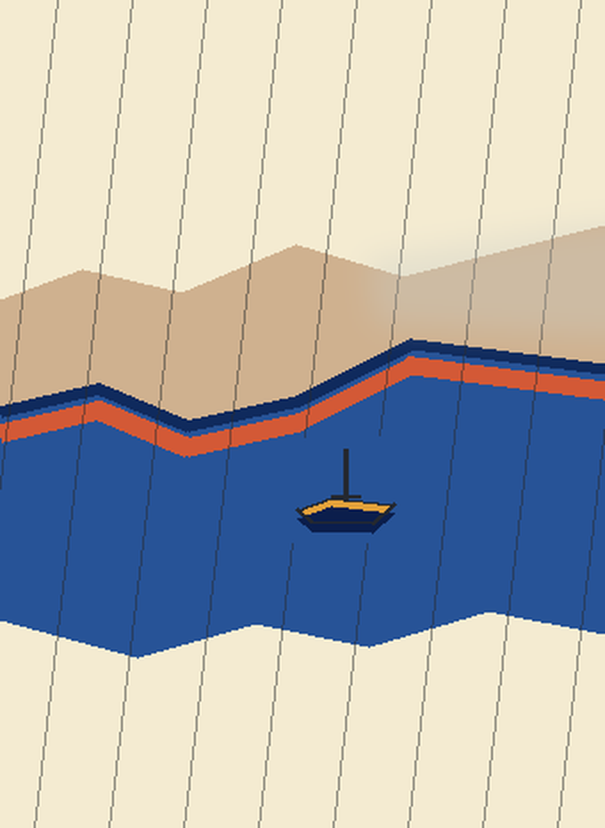

Rain Behind the Bank
A small boat stays clear while one field of rain crosses the river and the far bank. Over a short reach, the bank and rain soften together; over the water, the lines stay sharp.

A digital drawing. The rain and veil are screen-made marks, not a reconstruction of a woodblock impression.
Return to the studio